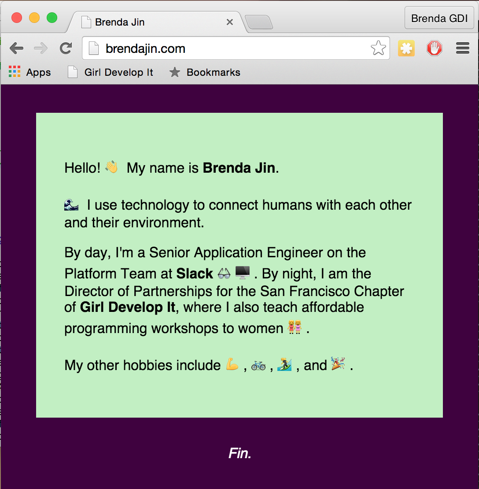
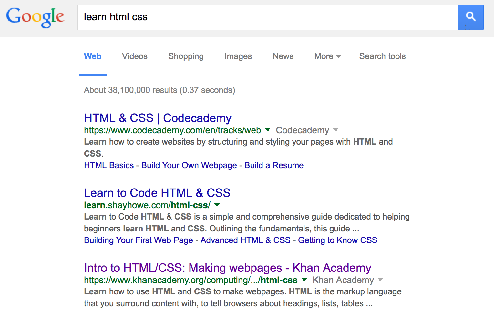
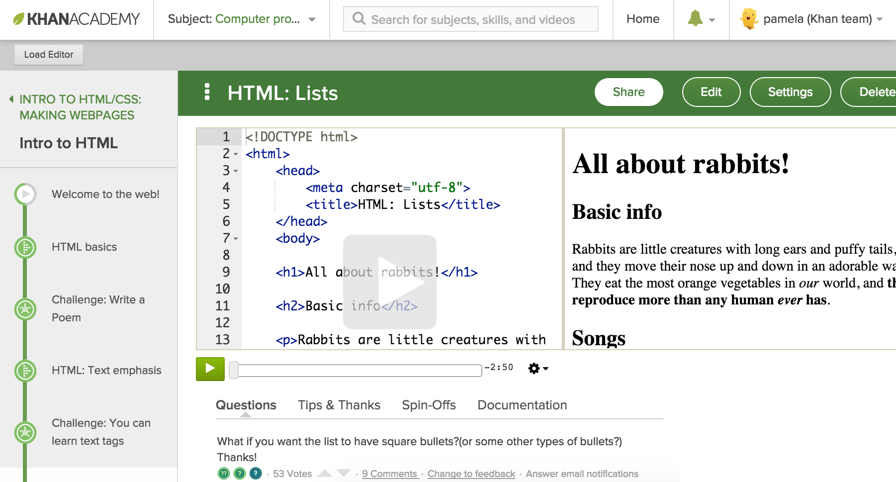
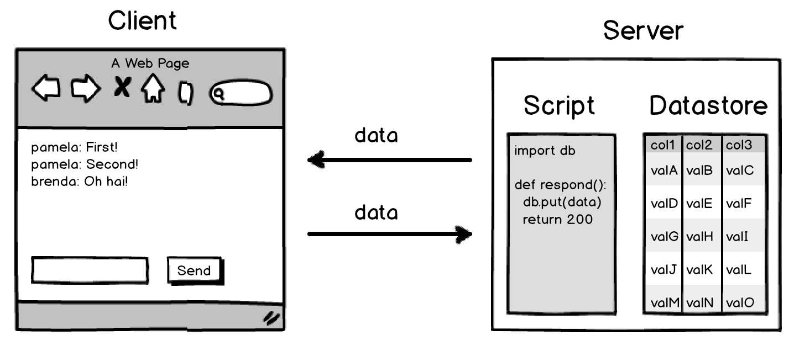
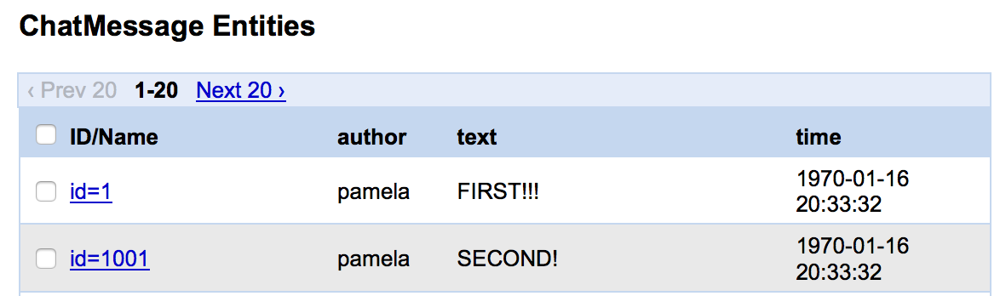

Tech101: What is the Web?
What is the web?
A network that allows computers to connect and exchange information.

HTTP
(Hypertext Transfer Protocol)
- A system with rules
- How computers communicate over the web
- Made of requests and responses
HTTP Requests
- Contain a verb like GET, POST, DELETE
- A path on the server, like: /tech-101.html
- A host, like: www.girldevelopit.com
GET /tech-101.html HTTP/1.1
Host: www.girldevelopit.com
HTTP Responses
- Contain a response code like 200 or 404
- Contain headers
- Contain content like HTML
200
Content-Type: text/html
<doctype html>
<html>
<head>
<title>HowStuffWorks "How Web Servers Work" </title>
…
</html>Clients and Servers
Clients are computers that access the web.
Servers store and provide information.
Examples of Clients

Browsers
- Are a specific type of client application.
- Are programs that render content on the web, most often HTML pages and related resources.
- HTML is a "markup language" that describes a webpage. When you're on a webpage, you can "view source" to see the HTML that the browser is rendering.
Static Webpage:
Breakdown
Take a look!
What's it made of?
HTML
<h2>What's it made of?</h2>and CSS
<style>
h2 { color: salmon; }
</style>How do you set up a website?
- Find a hosting provider
- Register a domain
- Upload your files!
How do you edit it?
- Text Editor (such as Sublime Text)
- WYSIWIG Editor (such as Weebly)
Live demo!
One HTML and one CSS change on http://www.brendajin.com
- Open the link
- Save As...
- Open the file locally with a text editor or IDE
How do you make a good website?
Answer: think about your users!
- UI/UX - can users accomplish what they need to?
- SEO - users want to be able to find your site via search engine
- Accessibility - users with disabilities and varying needs - big text size, high contrast, shapes instead of colors
- Responsiveness - users on different screen sizes
Learn more!
Come to our HTML/CSS and Advanced CSS series

Dynamic Webpage:
Breakdown
What's it made with?
HTML
CSS
...plus JavaScript!
JavaScript
playVideo();- Invented specifically to be used on webpages
- *Not* the same as Java
- Often used with other libraries and frameworks like jQuery and Backbone
- Now one of the most popular programming languages
Learn more!
Come to JS 101 and our Advanced JS series

Data-driven Webpage:
Breakdown
What data is on websites?
...And where did it come from?
Mostly user-generated content
Google search
Mostly computer-generated content
Khan Academy
Mix of user-generated, site-created, computer-generated
A simpler example...
What's it made with?
HTML, CSS, JS
Plus.. Python, BigTable
The server side
Uses Python to respond to requests and store data.
message = ChatMessage(text=data["text"], author=data["author"])
message.put()
Many other languages can be used on the server: Ruby, Java, Scala, C++, Go, PHP, JavaScript, etc.
The database
Uses Google's BigTable datastore, which is optimized for scalability.
Many other databases can be used on a server: MySQL, PostGRES, MongoDB, Redis, etc.
Careers
Meet the web team
- Content & Marketing – Copywriters, SEO Strategists, Content Strategists
- Design – UX Designers, Web Designers, Graphics Designers
- Development – Front End Developers, Back End Developers, Server Admins, Database Admins
- Management & QA – Project Manager, QA Engineers
How do you become a web developer?
- Earn (optional) – Certification, Bootcamp, Degree
- Learn
- Build
- Be curious
- Network
Day in the life
Planning, thinking, drawing, debugging